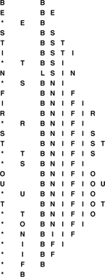

C++ Programming Robert Sedgewick - Princeton University Addison Wesley Professional Algorithms in C++, Parts 1–4: Fundamentals, Data Structure, Sorting, Searching, Third Edition C++ Programming Robert Sedgewick - Princeton University Addison Wesley Professional Algorithms in C++, Parts 1–4: Fundamentals, Data Structure, Sorting, Searching, Third Edition
9.1. Elementary Implementations
The basic data structures that we discussed in Chapter 3 provide us with numerous options for implementing priority queues. Program 9.2 is an implementation that uses an unordered array as the underlying data structure. The find the maximum operation is implemented by scanning the array to find the maximum, then exchanging the maximum item with the last item and decrementing the queue size. Figure 9.1 shows the contents of the array for a sample sequence of operations. This basic implementation corresponds to similar implementations that we saw in Chapter 4 for stacks and queues (see Programs 4.7 and 4.15), and is useful for small queues. The significant difference has to do with performance. For stacks and queues, we were able to develop implementations of all the operations that take constant time; for priority queues, it is easy to find implementations where either the insert or the remove the maximum functions takes constant time, but finding an implementation where both operations will be fast is a more difficult task, and is the subject of this chapter.
This sequence shows the result of the sequence of operations in the left column (top to bottom), where a letter denotes insert and an asterisk denotes remove the maximum. Each line displays the operation, the letter removed for the remove-the-maximum operations, and the contents of the array after the operation.

We can use unordered or ordered sequences, implemented as linked lists or as arrays. The basic tradeoff between leaving the items unordered and keeping them in order is that maintaining an ordered sequence allows for constant-time remove the maximum and find the maximum but might mean going through the whole list for insert, whereas an unordered sequence allows a constant-time insert but might mean going through the whole sequence for remove the maximum and find the maximum. The unordered sequence is the prototypical lazy approach to this problem, where we defer doing work until necessary (to find the maximum); the ordered sequence is the prototypical eager approach to the problem, where we do as much work as we can up front (keep the list sorted on insertion) to make later operations efficient. We can use an array or linked-list representation in either case, with the basic tradeoff that the (doubly) linked list allows a constant-time remove (and, in the unordered case join), but requires more space for the links.
Program 9.2. Array implementation of a priority queue|
This implementation, which may be compared with the array implementations for stacks and queues that we considered in Chapter 4 (see Programs 4.7 and 4.15), keeps the items in an unordered array. Items are added to and removed from the end of the array, as in a stack.
template <class Item>
class PQ
{
private:
Item *pq;
int N;
public:
PQ(int maxN)
{ pq = new Item[maxN]; N = 0; }
int empty() const
{ return N == 0; }
void insert(Item item)
{ pq[N++] = item; }
Item getmax()
{ int max = 0;
for (int j = 1; j < N; j++)
if (pq[max] < pq[j]) max = j;
exch(pq[max], pq[N-1]);
return pq[--N];
}
};
|
The worst-case costs of the various operations (within a constant factor) on a priority queue of size N for various implementations are summarized in Table 9.1.
Table 9.1. Worst-case costs of priority queue operationsImplementations of the priority queue ADT have widely varying performance characteristics, as indicated in this table of the worst-case time (within a constant factor for large N) for various methods. Elementary methods (first four lines) require constant time for some operations and linear time for others; more advanced methods guarantee logarithmic-or constant-time performance for most or all operations. | | | insert | remove maximum | remove | find maximum | change priority | join | ordered array | N | 1 | N | 1 | N | N | ordered list | N | 1 | 1 | 1 | N | N | unordered array | 1 | N | 1 | N | 1 | N | unordered list | 1 | N | 1 | N | 1 | 1 | heap | lg N | lg N | lg N | 1 | lg N | N | binomial queue | lg N | lg N | lg N | lg N | lg N | lg N | best in theory | 1 | lg N | lg N | 1 | 1 | 1 |
Developing a full implementation requires paying careful attention to the interface—particularly to how client programs access nodes for the remove and change priority operations, and how they access priority queues themselves as data types for the join operation. These issues are discussed in Sections 9.4 and 9.7, where two full implementations are given: one using doubly-linked unordered lists, and another using binomial queues.
The running time of a client program using priority queues depends not just on the keys, but also on the mix of the various operations. It is wise to keep in mind the simple implementations because they often can outperform more complicated methods in many practical situations. For example, the unordered-list implementation might be appropriate in an application where only a few remove the maximum operations are performed, as opposed to a huge number of insertions, whereas an ordered list would be appropriate if a huge number of find the maximum operations are involved, or if the items inserted tend to be larger than those already in the priority queue.
Exercises |  9.5 Criticize the following idea: To implement find the maximum in constant time, why not keep track of the maximum value inserted so far, then return that value for find the maximum? 9.5 Criticize the following idea: To implement find the maximum in constant time, why not keep track of the maximum value inserted so far, then return that value for find the maximum?
| | 9.6 Give the contents of the array after the execution of the sequence of operations depicted in Figure 9.1. | | 9.7 Provide an implementation for the basic priority queue interface that uses an ordered array for the underlying data structure. | | 9.8 Provide an implementation for the basic priority queue interface that uses an unordered linked list for the underlying data structure. Hint: See Programs 4.8 and 4.14. | | 9.9 Provide an implementation for the basic priority queue interface that uses an ordered linked list for the underlying data structure. Hint: See Program 3.11. | |  9.10 Consider a lazy implementation where the list is ordered only when a remove the maximum or a find the maximum operation is performed. Insertions since the previous sort are kept on a separate list, then are sorted and merged in when necessary. Discuss advantages of such an implementation over the elementary implementations based on unordered and ordered lists. 9.10 Consider a lazy implementation where the list is ordered only when a remove the maximum or a find the maximum operation is performed. Insertions since the previous sort are kept on a separate list, then are sorted and merged in when necessary. Discuss advantages of such an implementation over the elementary implementations based on unordered and ordered lists.
| |  9.11 Write a performance driver client program that uses insert to fill a priority queue, then uses getmax to remove half the keys, then uses insert to fill it up again, then uses getmax to remove all the keys, doing so multiple times on random sequences of keys of various lengths ranging from small to large; measures the time taken for each run; and prints out or plots the average running times. 9.11 Write a performance driver client program that uses insert to fill a priority queue, then uses getmax to remove half the keys, then uses insert to fill it up again, then uses getmax to remove all the keys, doing so multiple times on random sequences of keys of various lengths ranging from small to large; measures the time taken for each run; and prints out or plots the average running times.
| | 9.12 Write a performance driver client program that uses insert to fill a priority queue, then does as many getmax and insert operations as it can do in 1 second, doing so multiple times on random sequences of keys of various lengths ranging from small to large; and prints out or plots the average number of getmax operations it was able to do. | | 9.13 Use your client program from Exercise 9.12 to compare the unordered-array implementation in Program 9.2 with your unordered-list implementation from Exercise 9.8. | | 9.14 Use your client program from Exercise 9.12 to compare your ordered-array and ordered-list implementations from Exercises 9.7 and 9.9. | | 9.15 Write an exercise driver client program that uses the functions in our priority-queue interface Program 9.1 on difficult or pathological cases that might turn up in practical applications. Simple examples include keys that are already in order, keys in reverse order, all keys the same, and sequences of keys having only two distinct values. | | 9.16 (This exercise is 24 exercises in disguise.) Justify the worst-case bounds for the four elementary implementations that are given in Table 9.1, by reference to the implementation in Program 9.2 and your implementations from Exercises 9.7 through 9.9 for insert and remove the maximum; and by informally describing the methods for the other operations. For remove, change priority, and join, assume that you have a handle that gives you direct access to the referent. |
|